Ladder Spreads 2 — The Bear Put Ladder
The bearish mirror of the bull call ladder: buy one higher-strike put, write two lower-strike puts, and get paid to play the downside — while owning a naked tail below.
The bear put ladder buys 1 ATM/slightly-OTM put and writes 2 lower-strike puts at two different strikes for a small debit or even a credit. It cheapens a bearish bet and maximizes profit in the zone between the two short strikes — but leaves an unhedged tail if the stock craters through both.
The gist
- Structure: BUY 1X ATM or slightly-OTM higher-strike put + WRITE 2X lower-strike puts at TWO different lower strikes, same expiry — three transactions, for a small net debit or even a credit.
- A credit is often EASIER to achieve than on a bull call ladder because put implied volatilities usually run higher than call IVs.
- Payoff: profit is CAPPED and maximized in the ZONE between the two short strikes — it peaks at the HIGHER short strike and stays flat down to the lower short strike. Upper breakeven = long strike − net debit.
- The critical risk: below the lowest short strike you are short 2 puts vs long 1 — a NAKED, unhedged tail. Loss is limited only by the stock going to zero, and a gap-down spikes put IV making buy-backs costly.
- Use it when you believe the stock falls TO the higher short strike but no lower (e.g. after an earnings miss) — the higher short strike is the floor you believe holds. Large-cap only.
- Also a low-cost (or credit) hedge on a long stock position: you can get PAID to hold a hedge, though the dollar upside is capped.
- Unwinding: buy back one short put → left with a bear put spread; buy back both → left with a long put. Flexibility in continuous markets.
- Usefulness: HIGH in practice (abnormal moves are needed to lose in big-cap names), MEDIUM in theory (gap risk + the naked tail).
- WMT worked example (27 Feb 2018, spot $93.12, expiry 15 Jun 2018, ~$20,000 as 2X sets): BUY 2X $92.50 puts @ $4.35, SELL 2X $80 @ $0.88, SELL 2X $75 @ $0.46 → net debit $3.01 ($602); upper breakeven $89.49; max profit $1,898 in the $80–$75 zone; per-contract R/R 3.15 — better than all the alternatives.
The Bear Put Ladder — the bearish mirror
- Video 19 of the Professional Options Trading Masterclass — the second ladder spreads video.
- The bear put ladder is the bearish mirror of chapter 18's bull call ladder: an extension of the bear put spread with a third leg written even further OTM.
Where the bull call ladder cheapened an upside bet by writing an extra call above, the bear put ladder cheapens a downside bet by writing an extra put below. Same structure, opposite direction.
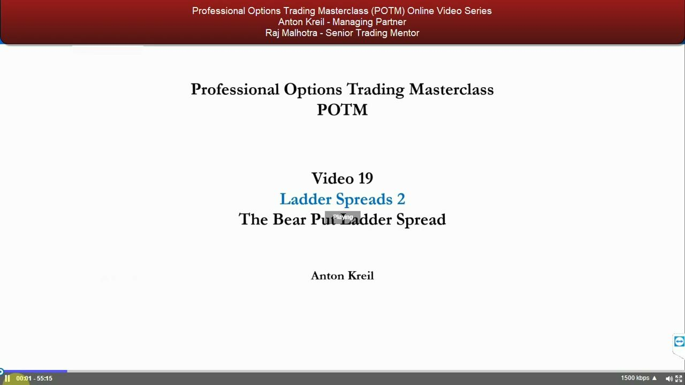
Quick explanation — buy one put, write two lower
- BUY 1X ATM or slightly-OTM put + WRITE 2X lower-strike puts at two DIFFERING strikes, same expiration.
- A bearish directional strategy — profit from a move lower in the stock, done more cheaply than simply owning a put.
- Bear put spread = 2 transactions (buy 1 put, sell 1 lower). Bear put ladder = 3 transactions (buy 1, sell 2 lower at different strikes).
- Can be put on for a small debit or even a CREDIT.
The only real difference from a bear put spread is the number of transactions, the ratio by which the lower puts are written, and the cost. You write a put at a strike you believe the stock will not go below by expiry, to lower the cost of playing the downside.
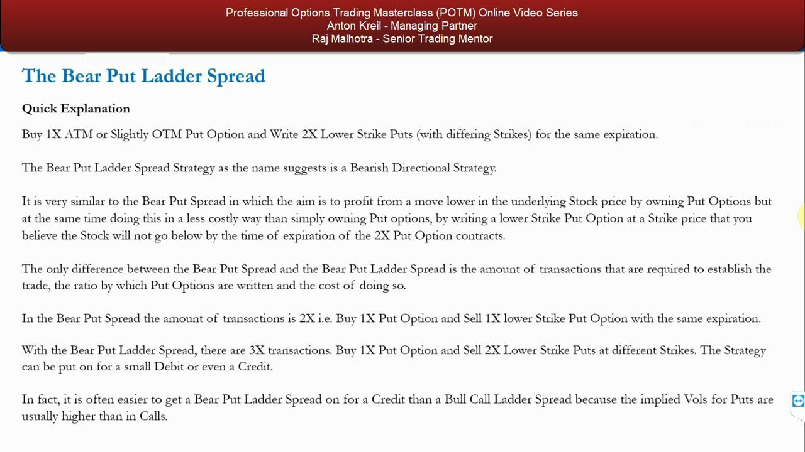
Debit or credit — why credit is easier here
- It is often EASIER to get a bear put ladder on for a credit than a bull call ladder.
- That is because put implied volatilities are usually higher than call IVs — you are selling richer premium on the two lower puts.
- Directional bearish, simple to put on, three transactions, debit-or-credit — the parameters agenda for the strategy.
Higher put IV is the structural reason the bearish version of the ladder tilts more naturally toward a net credit than its bullish cousin.
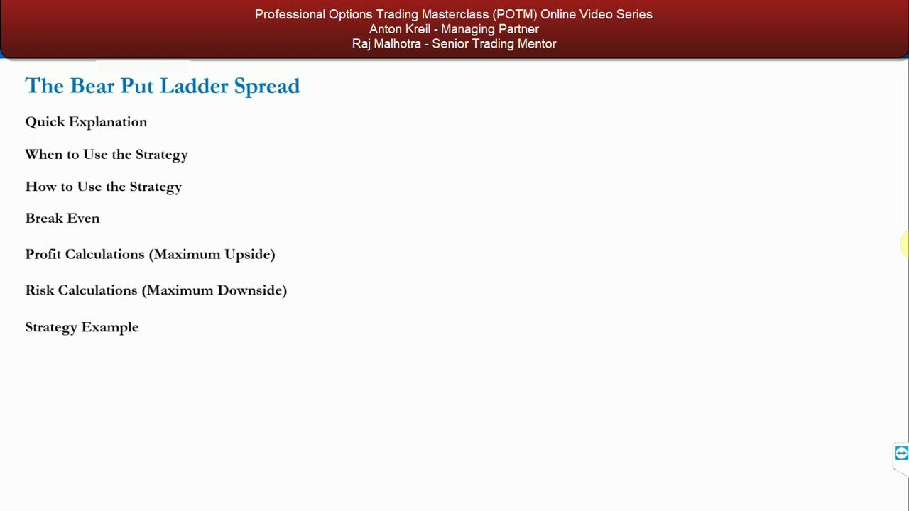
When to use — a trade-off of cost vs forgone opportunity
- Choosing the ladder vs a bear put spread, a long put, or shorting stock is a trade-off between upfront cost (debit/credit) and forgone profit opportunity.
- Useful incrementally: if you can get it on at good prices AND you have high certainty the stock won't fall below a certain price by expiry, it is cheaper than a bear put spread or long put.
- The catch: if the stock falls below BOTH lower short strikes you still make money if it doesn't fall too much, but you make LESS than a spread/long-put/short-stock — and past a point you actually LOSE.
The value is purely relative. You accept a capped, smaller maximum profit in exchange for a lower cost of entry — a bet that pays off only if the stock lands where you expect and no lower.
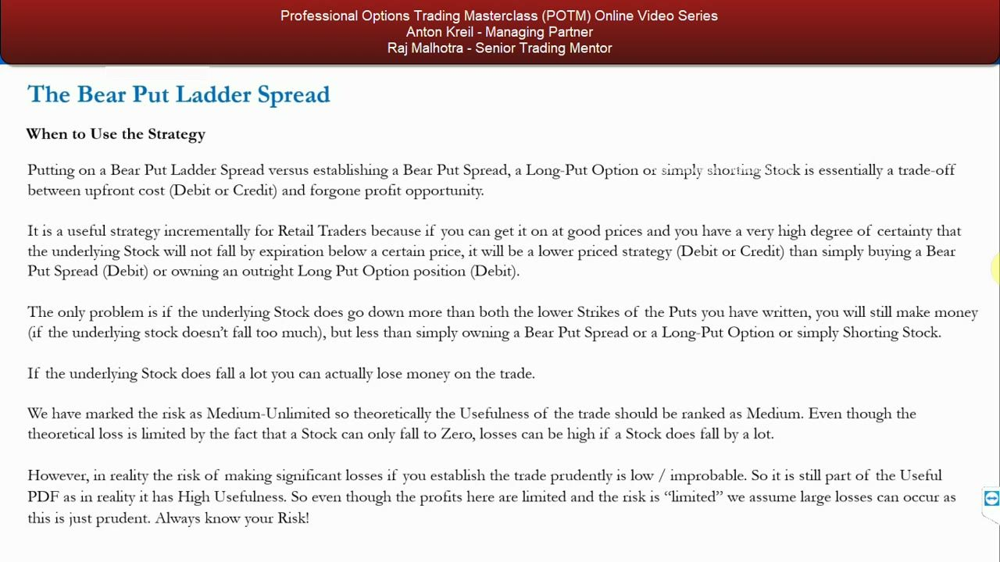
Risk ranking — medium in theory, high in practice
- Max risk is 'unlimited' only in the sense that a stock can fall to zero; losses can be high if the stock craters.
- In theory that argues for MEDIUM usefulness — but in reality the stock would have to move abnormally far to lose money, so it is ranked HIGH.
- You can always buy back the short puts in continuous markets — a degree of flexibility that supports the high rank.
- But when a stock gaps down on bearish news, put IV rises dramatically, so covering the short puts can be costly.
Know your risk from the outset. Prudent strike selection plus the ability to buy back shorts is what turns a theoretically medium-usefulness structure into a high-usefulness tool in practice — provided you never forget the gap risk.
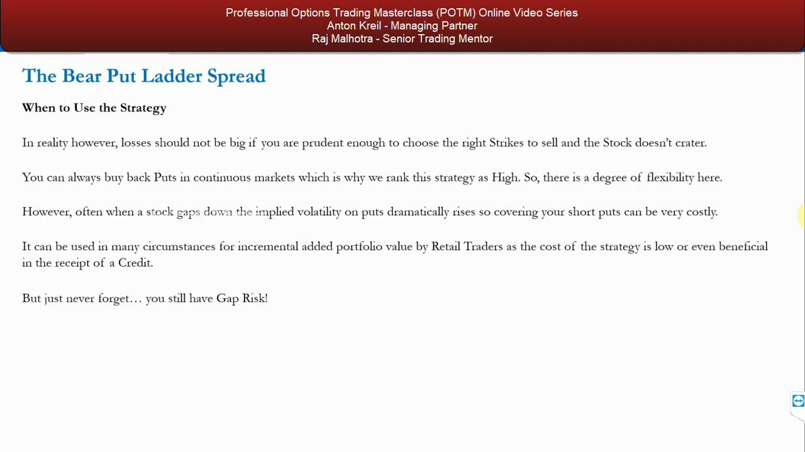
How to use — ATM vs OTM depends on how far you think it falls
- Expecting a MODERATE fall: be short stock, or buy an ATM put and sell one lower (bear put spread), or buy an ATM put and write two differing lower strikes (bear put ladder).
- Don't buy an OTM put for a moderate move — it lowers your chance of maximizing profitability.
- There must always be a marginal benefit over a bear put spread, long put, or short stock — from a risk-reward analysis of the specific fundamentals and capital considerations.
Every trade is chosen by comparing its risk-reward to every alternative, anchored to your fundamental view. Match the strike selection to the size of the fall you actually expect.
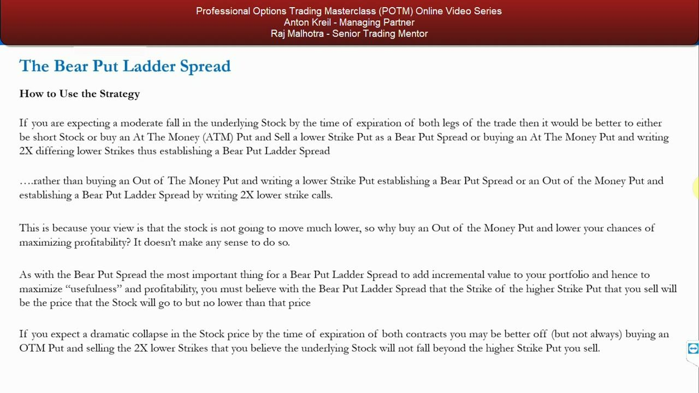
Sell the floor you believe holds
- The most important rule: the HIGHER strike put you sell must be the price you genuinely believe the stock will go to, but NO lower.
- The second, lower short strike must be even lower than that.
- Profit is maximized when the stock settles at or as close as possible to the higher short strike by expiration — regardless of whether you expect a moderate or dramatic fall.
- You profit two ways: on the long put as the stock falls, and on the written puts via time decay.
The biggest decision is the strikes you write. The higher short strike is the floor you believe holds; sell it there and the profit peaks exactly where you think the stock lands.
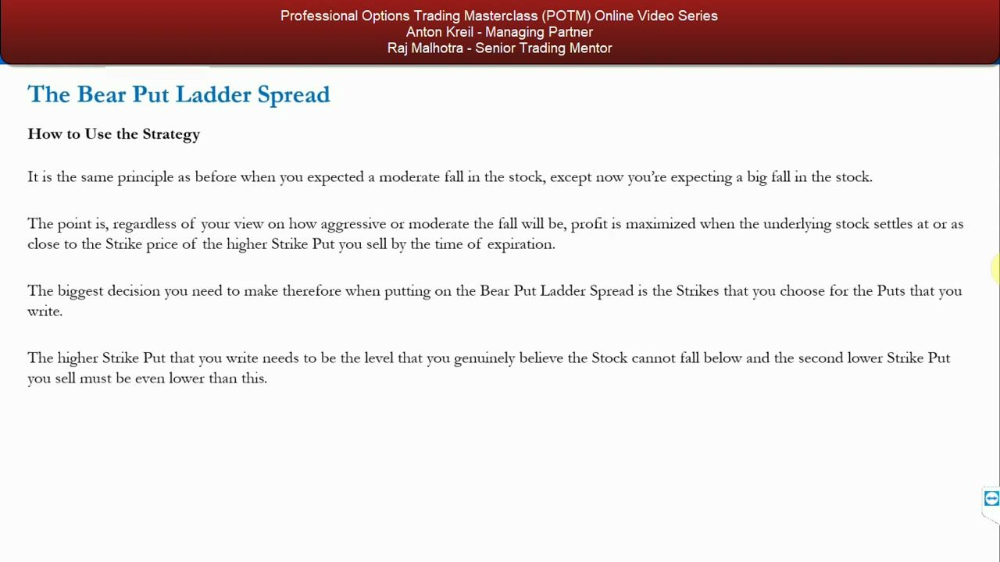
The payoff and the naked tail below
- Between the two short strikes you still make money — just no MORE incremental profit; max profit sits at the higher short strike.
- Below BOTH short strikes profit diminishes quickly and you can lose money — the long put no longer keeps pace with the two short puts.
- The strategy also loses if the stock DOESN'T fall: shorts expire worthless (a small gain) but the long put also expires worthless, and you paid more for the long than you received on the shorts.
- Losses are not limited to premium paid; a big-enough down move flips you into a loser — plus gap risk.
Below the lowest short strike you are short 2 puts against 1 long — an unhedged tail. The remedy is flexibility: you can always buy one or both shorts back in continuous markets.
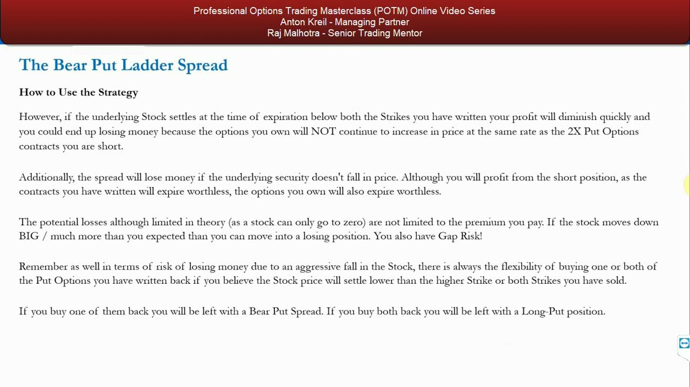
Unwinding — collapse it back to a spread or a long put
- Buy back ONE short put → you are left with a bear put spread.
- Buy back BOTH short puts → you are left with a plain long put.
- The ladder can deliver a higher ROI than simply buying puts or a bear put spread, and reduced losses if the stock rises and you are wrong — because you paid less.
- Disadvantages: more commissions, capped profits, larger margin (you write 2X as many puts as you buy).
You know almost exactly how much you can lose at entry; the one thing you can't pin down is the outcome if the stock falls aggressively through both short strikes. Unwinding is your escape hatch into a cleaner structure.
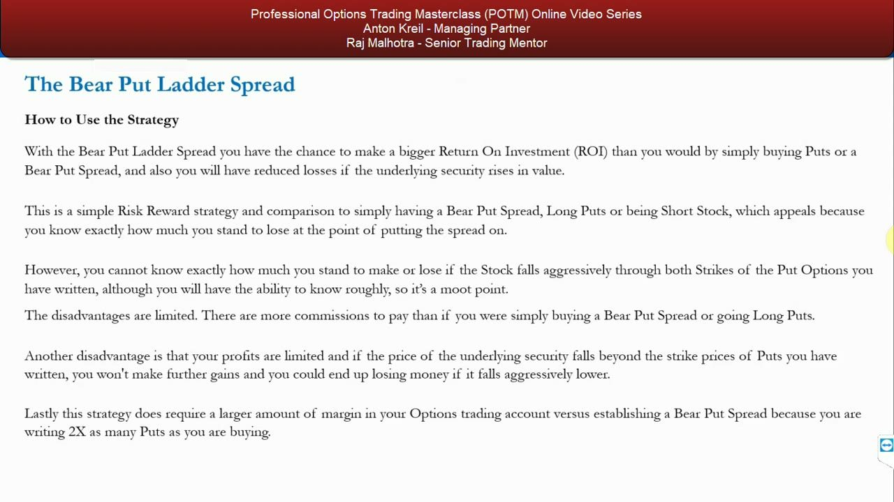
As a hedge — getting paid to protect long stock
- Against a long stock position, buying an ATM/slightly-OTM put and selling 2X lower puts lowers the cost of a simple long-put hedge.
- You may even collect a CREDIT — i.e. get PAID to hold a hedge.
- The dollar upside is capped, but a decent unexpected fall saves losses on the long stock and gives you ammunition to buy more stock into a technical dip if fundamentals are intact.
Done many times over a lifetime, a low-cost or credit hedge on core longs adds significant value — a key reason the strategy rates high usefulness for retail traders.
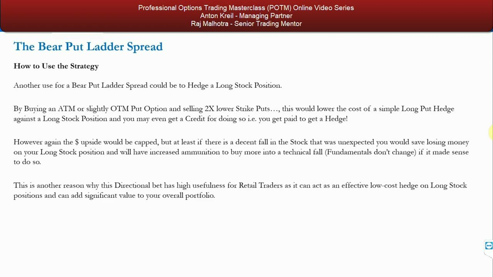
The WMT setup — an Amazon-driven earnings miss
- 27 Feb 2018: Walmart at $93.12 after a Q4 2017 earnings miss driven by the Amazon e-commerce price wars.
- The view: this is the START of the demise, not the end — but $80 is an unrealistic floor before the next earnings.
- Next earnings expected the third week of May; the 18 May expiry could miss a 19 May report, so choose the 15 Jun 2018 chain to CAPTURE the earnings volatility.
- Target ~$20,000 notional, structured as 2X contract-sets.
Pick the expiry that encompasses earnings — you want the earnings volatility inside the trade. The higher short strike ($80) is the floor Anton believes holds before the next report.
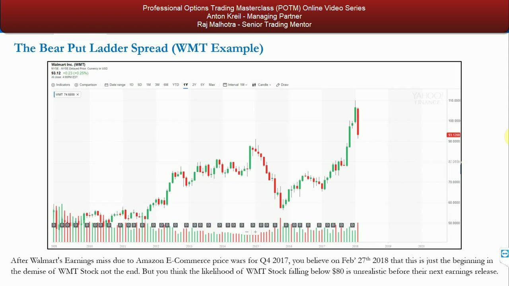
Benchmark 1 — short stock and the long put
- SHORT STOCK: $20,000 at $93 = 215 shares. At $80 → +$2,795 (14%); at $75 → +$3,870. Downside theoretically unlimited; with a $97.50 stop you'd lose $4.50 × 215 = $967.50 — plus upside gap risk.
- LONG PUT: buy 2X $92.50 puts @ $4.35 → $870 debit. Breakeven $88.15. At $80 → +$1,630; at $75 → +$2,630.
- Long put per-contract R/R: risk $4.35 to make $8.15 → 1.87 — not that good, because the post-miss put demand makes puts expensive.
The short stock carries unlimited, gappy upside risk; the long put is capital-light but its 1.87 R/R is dragged down by rich post-miss put premiums. Both set the bar the ladder must beat.
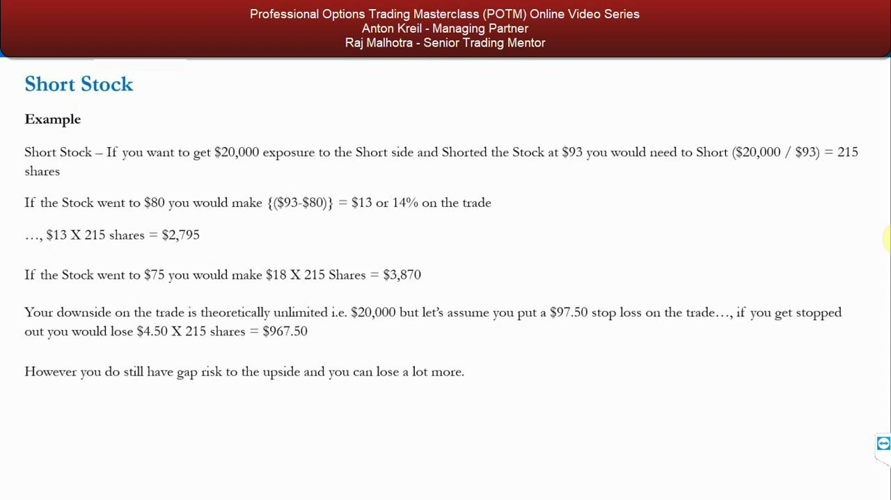
Benchmark 2 — the bear put spread (R/R 2.60)
- BEAR PUT SPREAD: buy 2X $92.50 @ $4.35, sell 2X $80 @ $0.88 → net debit $3.47 ($694).
- Breakeven $89.03; max downside $3.47/$694; max upside ($12.50 − $3.47) × 200 = $1,806.
- Per-contract R/R: risk $3.47 to make $9.03 → 2.60 (the on-screen '260' is a typo Anton corrects to 2.60). Decent, but not good enough.
- The SHORT BEAR RATIO SPREAD is dismissed outright: WMT's high price only allows a 1-2 ratio for $20,000 of risk, which doesn't pay.
2.60 is okay but Anton wants better than that to justify a trade. Puts are simply in demand after the Q4 miss, so selling further-OTM strikes doesn't offset the cost of the near-the-money long put.
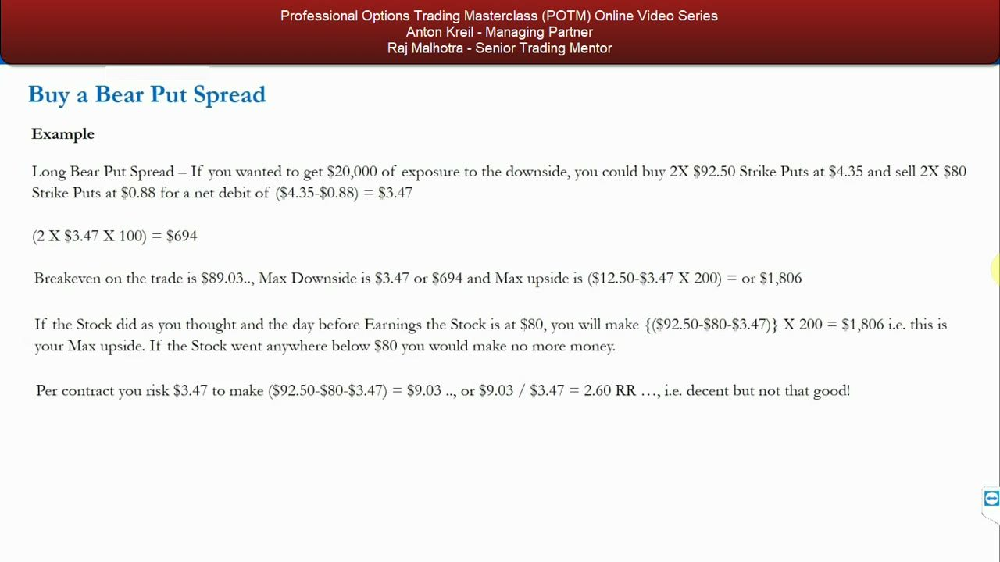
The bear put ladder — the worked example
- BUY 2X $92.50 @ $4.35, SELL 2X $80 @ $0.88, SELL 2X $75 @ $0.46 → net debit $4.35 − $0.88 − $0.46 = $3.01 → $602 total.
- Upper breakeven $89.49; max downside $3.01/$602 (if the stock stays above $75); max upside ($12.50 − $3.01) × 200 = $1,898.
- Max profit $1,898 is reached at $80 and holds flat through the $80–$75 zone: at $75 the long $92.50 puts are worth $17.50 ($3,500), the short $80 puts owe $5 ($1,000), so $3,500 − $1,000 − $602 = $1,898.
- Below $80 but above $75 you simply stop making more incremental profit.
For $602 the ladder buys the same $80-strike max upside as the bear put spread — the extra $75 short leg refunded $0.46 of cost. The profit plateau spans the whole zone between the two short strikes.
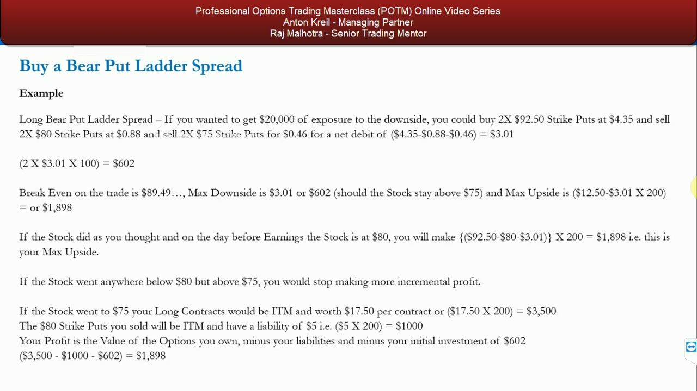
The downside walk — where the naked tail bites
- At $70: long puts worth $22.50 ($4,500); short $80 owe $10 ($2,000); short $75 owe $5 ($1,000) → $4,500 − $2,000 − $1,000 − $602 = +$898 (still a profit).
- At $65: long puts worth $27.50 ($5,500); short $80 owe $15 ($3,000); short $75 owe $10 ($2,000) → $5,500 − $3,000 − $2,000 − $602 = −$102 (a loss).
- Lower breakeven is just above $65 — WMT would have to fall $28.25 (~30.29%) from $93.25 before earnings for the trade to lose.
- This is the naked tail: below $75 the second short leg starts eating the long put's gains.
Even a huge move to $70 still profits; only a 30%-plus collapse to ~$65 turns it negative. That is why a very high-market-cap name like WMT is chosen — such an abnormal, fast collapse is improbable.
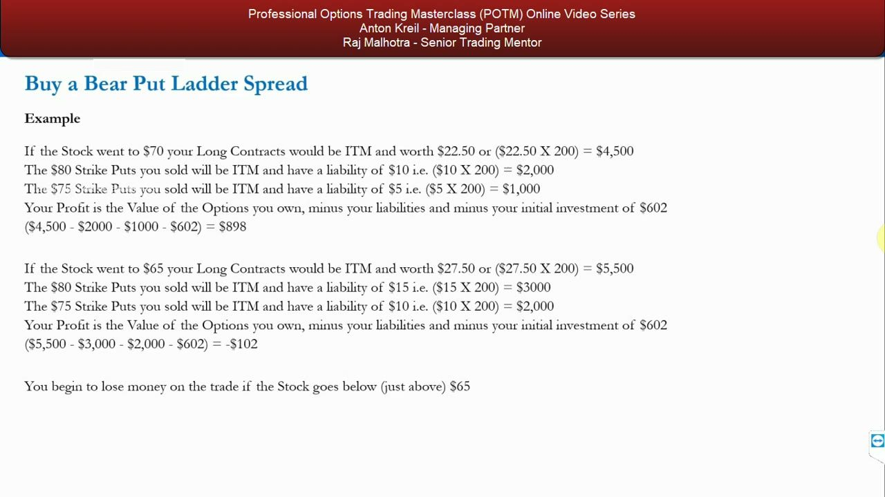
The verdict — best risk-reward of the lot (3.15)
- Realistic targeted upside at the $80 price target: $9.49 per contract ($949); max $ risk theoretically large only because a stock can go to zero.
- Per-contract R/R: risk $3.01 to make ($92.50 − $80 − $3.01) = $9.49 → 3.15 — better than short stock, long put (1.87) and bear put spread (2.60).
- The whole point: you think the stock goes to $80 but no lower before earnings — and you accept the known gap risk.
- To actually lose, WMT must fall ~30%+ to just above $65, which is unlikely for a stable, high-cap business.
If your floor conviction is right, the ladder delivers the best risk-reward of every bearish alternative. Even an international CFD trader committing $2,000 of margin with a $97.50 stop would lose $967.50 if the stock ticked UP — more than the ladder's entire cost.
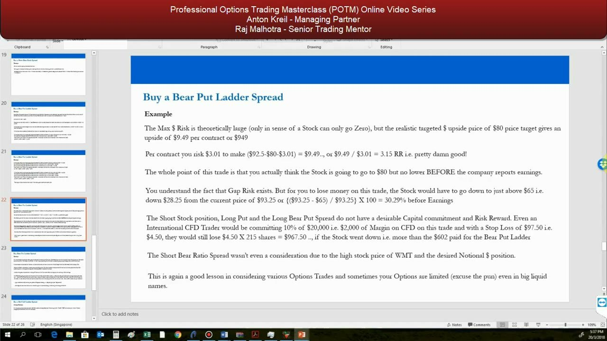
Managing it — buy back, run over earnings, optionality
- In continuous markets you can buy back the $80 put (e.g. with the stock at $84) → left with the $92.50–$75 bear put spread, clawing money back as it heads through $80.
- You can buy back one or both short strikes at any time; buy back both → just long the $92.50 put.
- Run it over earnings: with WMT at $96.74 pre-report you only risk the premium paid (unless it collapses below $65).
- If they massively miss and the stock is at $80, buy back both shorts and let the long $92.50 put run to 15 Jun — it could keep getting murdered.
- Options give you optionality: with directional bets you want to be massively right OR massively wrong — the worst outcome is nothing happening.
Giants don't fall often, but when they do they fall hard and fast — the ladder is a very good ROI tool in exactly those setups. Its flexibility to unwind into cleaner structures is the payoff for carrying the naked tail.
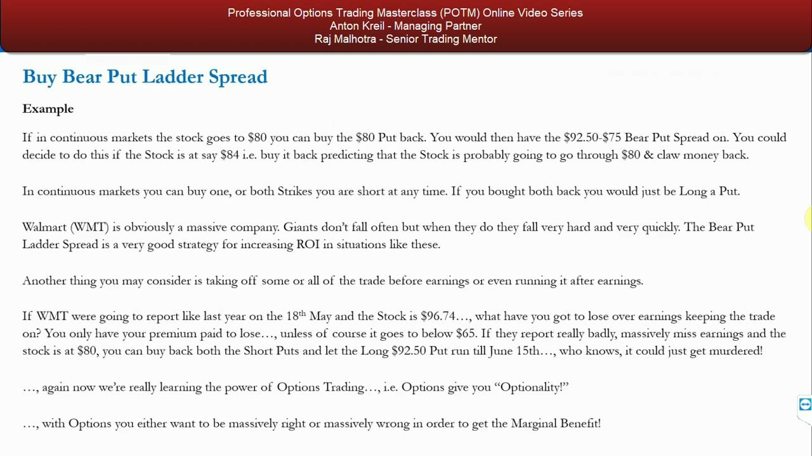
Glossary
- Bear Put Ladder SpreadBuy 1X ATM/slightly-OTM higher-strike put and write 2X lower-strike puts at two different lower strikes, same expiry, for a small net debit or credit. A bearish, cost-reduced extension of the bear put spread.
- Higher short strikeThe upper of the two written strikes ($80 in the WMT example) — the floor you believe the stock will reach but not fall below. Maximum profit is realized here.
- Profit zoneThe band between the two short strikes ($80 down to $75) where profit is flat at its maximum ($1,898). Peaks at the higher short strike, holds to the lower.
- Upper breakevenLong strike minus net debit — where the trade first turns profitable to the downside. In the WMT ladder: $92.50 − $3.01 = $89.49.
- Naked / unhedged tailBelow the lowest short strike you are short 2 puts against 1 long, so losses grow (limited only by the stock reaching zero). The lower breakeven in the WMT example is ~$65 (a 30.29% drop).
- Net debit / creditThe cash paid or received to open the ladder. Long premium minus the two written premiums: $4.35 − $0.88 − $0.46 = $3.01 debit ($602). Credits are easier here than on a bull call ladder because put IVs run higher.
- Gap riskThe danger that bearish news breaks while the market is closed, gapping the stock down through your short strikes — and spiking put IV so buying the shorts back is costly.
- UnwindingBuying back short legs to simplify: buy back one → a bear put spread; buy back both → a plain long put. Available any time in continuous markets.
- Risk-reward ratio (R/R)Per-contract reward divided by risk. WMT ladder: $9.49 / $3.01 = 3.15 — beating the long put (1.87) and the bear put spread (2.60).
- Earnings-expiry angleChoosing an expiry that encompasses the earnings date (15 Jun 2018, not 18 May) so the trade captures the earnings volatility rather than expiring just before the report.